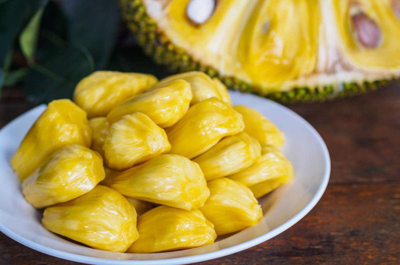

Mít Tố Nữ Long Khánh – Đồng Nai
Nói tới Mít tố nữ thì thị xã Long Khánh, tỉnh Đồng Nai vốn là đất của loại mít này. Quả thật thiên nhiên đã ưu đãi, nơi đây một khí hậu thuận hòa cho cây cối đơm hoa kết trái mà không phải âu lo bị lũ lụt, bão tố tàn phá như ở miền Trung, miền Bắc hoặc như ở mấy tỉnh đồng bằng sông nước miền Tây.
Long Khánh thực sự là nơi đất lành chim đậu. Thổ nhưỡng bazan màu mở không chỉ có thuận lợi cho cây cao su, cà phê mà còn các loại cây ăn quả. Vài chục năm gần đây Long Khánh đã mở rộng diện tích và chủng loại cây có giá trị khác là: chôm chôm, sầu riêng, mít tố nữ, thanh long, nhãn.. Tất nhiên còn nhiều loại cây ăn quả khác nữa mà từ lâu đời nhiều nơi trong cả nước đều có trồng vẫn thường xuyên có mặt trên thị trường như ổi, mãng cầu, sapôchê, hồng, măng cụt... Song đối với Long Khánh nổi bật hơn cả vẫn là mít tố nữ.

Đến Long Khánh bất cứ giờ nào, nơi chợ lớn, chợ nhỏ, nơi ngã ba đông người, bến xe, bến tàu... người ta dễ bắt gặp một không khí rộn ràng của cảnh mua bán đủ các loại trái cây, khách mua tha hồ lựa chọn, người không mua cũng ngắm nhìn thỏa thuê con mắt thật đúng như câu ca dao đã được truyền tụng từ bao đời:
"Sầu riêng, măng cụt, chôm chôm
Xoài ngon, mít ngọt, chuối thơm nghìn trùng"
Nhớ xưa kia mít Tố Nữ nổi tiếng gần xa, ai cũng biết đến chuyện tình ngang trái của chàng trai, cô gái nghèo yêu nhau nhưng phải chia lìa đôi ngả, cô gái vì đau buồn mà qua đời và trên mộ cô mọc lên một loại trái cây lạ. Cây đơm hoa và cho ra trái quả ngon ngọt khác thường, dân làng đem nhân giống và đặt tên là mít Tố Nữ.
Cây mít tố nữ là một loại cây trung bình, cao đến 20 m và có thể cho quả 2 lần mỗi năm ở vùng gần đường xích đạo. Cây khoảng 3 đến 5 tuổi thì bắt đầu cho quả. Mùa mít chín kéo dài khoảng 6 tuần. Mít Tố nữ, quả nhỏ hơn rất nhiều so với mít thường, có quả nặng chỉ vài lạng, to thì một, hai kg là nhiều, mỗi trái có khoảng 20 múi. Do quả nhỏ, nên nhiều người mới vào miền Nam thoạt nhìn tưởng đó là mít non. Múi và hương vị của mít Tố nữ cũng khác rất nhiều so với các loại mít khác: xẻ một đường đọc để bổ đôi trái mít, lật cuống lên sẽ thấy múi tròn, nổi gân, kết như một chùm dâu chín vàng, thơm lừng, thơm ngạt ngào, thơm rất lâu, vỏ và cùi mít có khi ba ngày còn phảng phất. Có lẽ trong mười hai thứ mít mà dân gian ta thường nói trong câu ca dao “mít mật, mít dai, mười hai thứ mít” thì mít Tố Nữ được ưu ái hơn cả. Nếu mít dai giòn, thơm, mít mật dày cùi, ngọt lịm, mít khoai thơm khắc khoải thì mít Tố Nữ dường như có đủ những hương vị ngon ngọt đó.

Để cho ra được những quả mít tố nữ ngon như vậy đòi hỏi phải có bàn tay khéo léo của các “nghệ nhân” trồng mít. Từ rất lâu đời, những nhà vườn nơi đây đã nắm được kỹ thuật tháp, ghép cây (ở đây thường dùng từ băng). Đó là trồng cây mít ta khi có gốc bằng cườm chân thì ghép (băng) mắt chồi non mít tố nữ vào. Khoảng 4 năm sau, cây mít sẽ cho ra quả 100% là mít tố nữ. Do vậy, cây mít tố nữ nào cũng có cái ngấn thành sẹo ở gốc. Bên cạnh đó, các nhà vườn còn áp dụng việc bón phân và tưới nước trong mùa khô để xử lý cho mít tố nữ có quả chín sớm. Khác với những loại trái cây khác, mít tố nữ chín cây thường không ngon, nên nhà vườn có kinh nghiệm thường hái mít tố nữ già đem rửa sạch mủ rồi ngâm nước, sau đó vớt ra ủ 2 đêm trái mít chín thơm lừng mà vỏ vẫn xanh um.
Mít Tố Nữ khi chín vỏ vẫn còn xanh mà múi đã vàng rực rỡ. Vào miệt vườn Lái Thiêu, ngồi trong lùm cây toả bóng mát rượi, thưởng thức một múi mít Tố Nữ mà người con gái đồng bằng sông Cửu Long khéo bày lên đĩa mới hiểu sao con người vùng sông nước phóng khoáng đến thế. Ăn mít Tố Nữ cũng cầu kì lắm nhé, khi ăn không thể xô bồ, ăn lấy no, mà phải nhâm nhi thưởng thức để hưởng đến trọn cái sắc, hương, vị của thức quả quý. Theo những bước chân Việt vào Nam ra Bắc, nay mít Tố Nữ đã góp mặt trên hầu hết phố phường của Hà thành. Nơi đâu có Mít Tố Nữ, nơi đó hương thơm ngào ngạt cả một dãy phố làm nức lòng biết bao khách bộ hành.